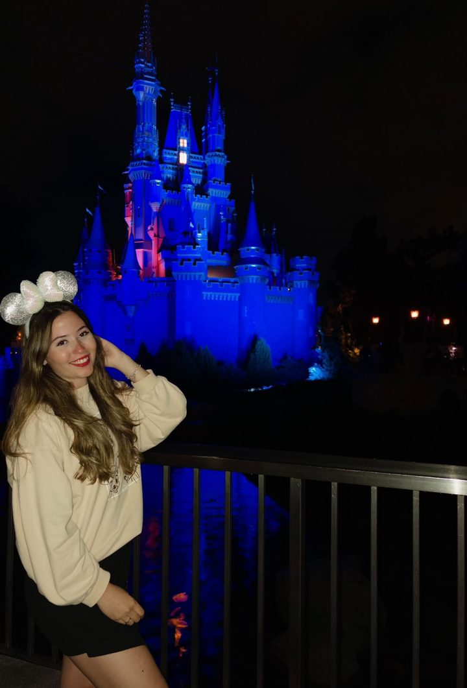
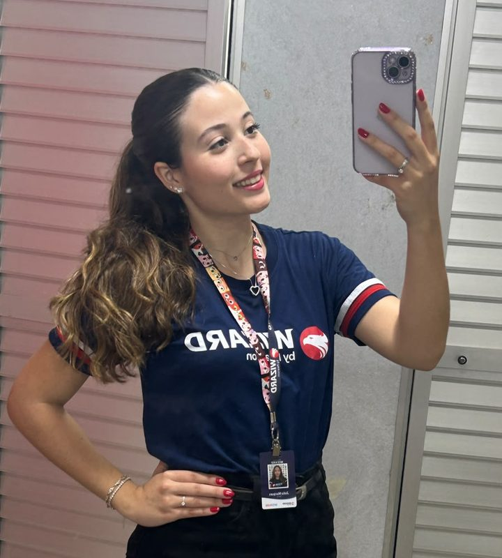

Inglês para viajar
Do aeroporto ao hotel, dos restaurantes às direções: pratique situações reais para se comunicar com mais segurança e aproveitar cada experiência.
Aulas de inglês online e personalizadas, conectadas aos seus objetivos reais, viagens, cultura e interesses.
Escolha um tema e bata um papo com o nosso chat de prática. Ele pergunta, você responde, e corrige com carinho. É um jeito leve de perder a vergonha e conhecer como a Júlia ensina.
O idioma faz mais sentido quando conversa com aquilo que você ama e com o que deseja conquistar.
Do aeroporto ao hotel, dos restaurantes às direções: pratique situações reais para se comunicar com mais segurança e aproveitar cada experiência.
Livros, filmes, séries, músicas e universos como Harry Potter podem virar temas de aula, quando o aluno quer. Esse ambiente é construído em conjunto, sempre pensando no melhor aprendizado.
Um plano pensado para seu nível, ritmo, interesses e objetivos, com acompanhamento próximo e atividades que fazem sentido para você.
Suas aulas podem partir de universos que você já conhece, se você quiser. Veja exemplos do vocabulário que a gente pode explorar.
Feitiços, casas, criaturas e personagens viram vocabulário, leitura e conversação. Quer ver como é? Teste o tema no chat.
Maratone com propósito: entenda diálogos, expressões e reviravoltas sem depender da legenda.
Aprenda com letras, descubra gírias e treine a escuta com as músicas da sua playlist.
Leia no seu ritmo, com apoio para entender o enredo e ganhar vocabulário a cada capítulo.
Missões, níveis e legendas também ensinam inglês. Transforme o hobby em prática diária.
A cultura pop é um convite, não uma regra. Aluno e professora constroem esse ambiente juntos, sempre voltado para o melhor aprendizado. Se o seu interesse é outro, as aulas seguem o seu caminho.

A experiência de viajar para o exterior amplia o olhar sobre o idioma e suas culturas. Essa vivência inspira aulas que conectam o inglês à vida real: pedir informações, conhecer pessoas, explorar lugares e se sentir mais preparado para novas experiências.
Mais do que decorar regras, você aprende a usar o idioma com intenção, contexto e confiança.

Acredito que aprender inglês pode ser uma experiência leve, prática e conectada à vida de cada pessoa. Por isso, as aulas partem dos seus objetivos e interesses, com orientação individual, espaço para praticar e atenção ao seu desenvolvimento.
Sou formada pela Fisk e ensino inglês na Wizard há um ano e meio, com alunos de todas as idades. Aqui, recebo alunos a partir de 12 anos.
Seja para viajar, conversar com mais confiança ou explorar seus temas favoritos em inglês, vamos construir um caminho que faça sentido para você.
Um processo simples, pensado para você avançar com clareza e confiança.
Entendemos seus objetivos, interesses e o que você quer conquistar com o inglês.
Aluno e professora definem o melhor caminho, com conteúdos e atividades que se encaixam na sua rotina.
Aulas dinâmicas, conversação, exercícios e feedback para acompanhar sua evolução.
Seu inglês pode abrir portas para o seu futuro!